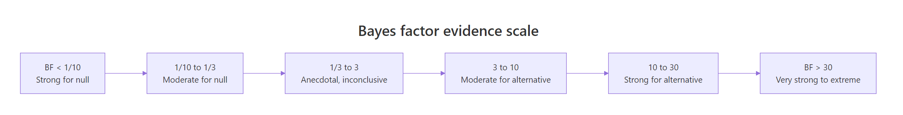
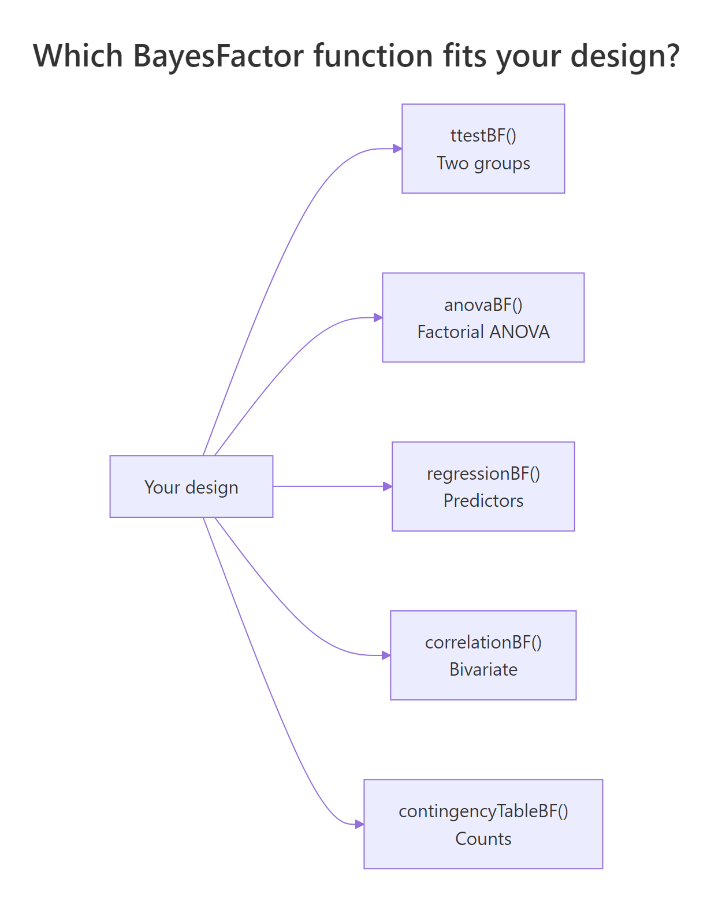

Bayes Factors in R: BayesFactor Package as Alternative to p-Values
A Bayes factor is a ratio that compares how well two hypotheses predict your data. Unlike a p-value, it can support either H0 or H1, and it stays interpretable as a direct measure of evidence. In R, the BayesFactor package computes it for t-tests, ANOVA, regression, correlation, and contingency tables with one function call.
How do I compute my first Bayes factor in R?
The BayesFactor package gives you a one-line answer to the question classical tests can't ask: how much more likely is my data under H1 than under H0? We will start with the built-in sleep dataset, where 10 patients were measured under two drug conditions. A paired t-test tells you whether the means differ. ttestBF() tells you how strongly the data prefer "they differ" over "they don't."
The Bayes factor is 17.26. That means the data are about 17 times more likely under the alternative ("the two drugs produce different sleep gains") than under the null ("they don't"). The package prints the prior used (r=0.707, the JZS default) and a tiny error estimate (±0%). Convert evidence to plain numbers with extractBF(bf_sleep)$bf.
Try it: Compute a two-sample Bayes factor on mtcars for whether mpg differs between automatic and manual transmissions (am). Save the result to ex_bf_am and print it.
Click to reveal solution
Explanation: The formula mpg ~ am tells ttestBF() to compare mpg between the two levels of am. A Bayes factor near 86 means the data favor "automatic and manual cars have different fuel efficiency" by about 86-to-1, very strong evidence under the Kass-Raftery scale.
What does the Bayes factor value mean?
A Bayes factor is the ratio of two predictions. The numerator is how likely your observed data would be if H1 (an effect exists) is true. The denominator is the same thing for H0 (no effect). Bigger ratios favor H1; smaller ratios favor H0; values near 1 mean the data are roughly equally compatible with both.
$$BF_{10} = \frac{P(\text{data} \mid H_1)}{P(\text{data} \mid H_0)}$$
Where:
- $BF_{10}$ = Bayes factor in favor of H1 over H0
- $P(\text{data} \mid H_1)$ = probability of seeing your data if H1 is true
- $P(\text{data} \mid H_0)$ = probability of seeing your data if H0 is true
Kass and Raftery (1995) suggested a rough scale for translating BF values into evidence strength.

Figure 1: How Bayes factor values map to strength of evidence. Values below 1 favor the null; values above 1 favor the alternative.
What if there really is no effect? The BF should drop below 1, telling you the data prefer H0. Let's simulate that.
The Bayes factor is 0.27. The reciprocal is 1 / 0.27 ≈ 3.8, so the data are about 3.8 times more likely under H0 than under H1. This is the property that makes Bayes factors so useful: they can quantify evidence FOR the null. A non-significant p-value never lets you say "the null is supported"; a small BF does.
Try it: Take the bf_null result above and "flip" it to express evidence in favor of H0 by computing 1 / extractBF(bf_null)$bf. Save it to ex_flip and round to 2 decimals.
Click to reveal solution
Explanation: extractBF() pulls the numeric BF out of the analysis object. Inverting it converts $BF_{10}$ to $BF_{01}$, the evidence ratio in favor of the null.
Bayes factor or p-value, what's different?
A p-value answers: "If the null is true, how often would I see data this extreme or more?" A Bayes factor answers a different question: "Given my data, how much more likely is H1 than H0?" Both come out of the same analysis but tell you different things, and they don't always agree on borderline cases.
Both methods scream "different." The p-value is 3.6e-42 (essentially zero), and the Bayes factor is 1.2e+38 (off the scale). They agree because the effect size is huge. The interesting cases are where they disagree, which the comparison table below makes concrete.
| Question | p-value answers | Bayes factor answers |
|---|---|---|
| Decision rule | Reject if p < 0.05 | Continuous evidence, no fixed cutoff |
| Evidence for H0 | Cannot quantify | Yes, BF < 1 |
| Sample size dependence | p shrinks as N grows | BF stabilizes toward true ratio |
| Stopping early | Increases false positives | Safe to peek and update |
| Reportable as effect | No | Yes ("data 17x more likely under H1") |
Try it: Run the iris comparison again, but compare setosa vs versicolor on Sepal.Length (not Petal.Width). Run both t.test() (saved as ex_t_ind) and ttestBF() (saved as ex_bf_ind).
Click to reveal solution
Explanation: Both tests detect a clear difference. The two species' sepal lengths are very far apart, so the p-value collapses to near zero and the BF rockets to about 3.6e+19, an extraordinary preference for H1.
How do I run Bayesian ANOVA and regression?
BayesFactor extends well beyond t-tests. The same logic, "ratio of model probabilities", scales up to factorial ANOVA, multiple regression, contingency tables, and correlations. The package picks the right reference null based on your formula.

Figure 2: Which BayesFactor function to call for each design.
For ANOVA, anovaBF() returns one Bayes factor per model in the formula's hierarchy. The output ranks all sub-models against the intercept-only null.
The dose main effect is overwhelmingly preferred (5e+12); adding supp doubles that (3e+14); the interaction model is the best by a hair (7e+14). The intercept-only null is not even close. To compare two models directly, divide them: bf_tooth[4] / bf_tooth[3] gives the BF for "interaction worth adding."
For regression, regressionBF() searches over predictor subsets and ranks them.
The single-predictor model rating ~ complaints wins outright. Adding learning halves the BF, suggesting learning is not pulling its weight. This is automatic Occam's razor: extra predictors are penalized unless they substantially improve fit.
extractBF(bf_obj)$bf gives you a plain numeric vector you can sort, transform, or feed into ggplot.Try it: Run a Bayesian one-way ANOVA on iris to test whether Sepal.Length differs across Species. Save the result to ex_bf_iris.
Click to reveal solution
Explanation: A BF of 4.5e+27 is essentially infinite evidence. The three iris species have different mean sepal lengths, and anovaBF() quantifies that with one function call.
How much do priors change the result?
Every Bayes factor depends on a prior, the assumed plausibility of effect sizes before seeing the data. BayesFactor uses a Cauchy prior on standardized effects with a scale parameter rscale. Three named defaults exist: medium = 0.707 (the JZS default), wide = 1, ultrawide = sqrt(2). Smaller rscale favors small effects; larger rscale allows for big ones.
The BF for the same sleep data drops from 17.3 (medium) to 10.5 (ultrawide). The conclusion does not flip, all three remain "strong evidence", but the magnitude does. This is called a robustness check and should accompany any reported BF.
ttestBF() with medium, wide, and ultrawide, and report the range. If the conclusion changes across priors, your result is not robust.Try it: Repeat the robustness check above using a narrow prior (rscale = 0.3). Save it to ex_bf_narrow.
Click to reveal solution
Explanation: A narrow prior says "if there is an effect, it is probably small." Since the observed effect is small-to-moderate, this prior aligns better with the data, pushing the BF higher. The conclusion (strong evidence for H1) does not change.
When should I pick a Bayes factor over a p-value?
Bayes factors and p-values are not enemies; they are tools with different sweet spots. Pick the right one for your context.
| Use Bayes factors when | Use p-values when |
|---|---|
| You want to quantify evidence for the null | You need a fixed decision rule (regulatory) |
| You expect to peek at the data or accumulate evidence over time | You have a fixed sample size and pre-registered analysis plan |
| You want a result interpretable as "X times more likely" | Your audience or pipeline expects significance testing |
| You can justify a prior | Tradition or replication of prior work demands frequentist methods |
| You are running a registered report or replication study | You need conformance with FDA, EMA, or similar guidelines |
t.test() and ttestBF() side by side. The p-value satisfies the convention; the Bayes factor adds interpretability and supports null findings.Try it: Classify each scenario as "BF preferred" or "p-value preferred" and explain why in 1 line. Save your answers as a character vector ex_pick.
Click to reveal solution
Explanation: Regulatory work demands p-values for tradition and conformance. Replication studies need to report null findings, which only Bayes factors can quantify. Sequential A/B tests benefit from the BF's optional-stopping safety.
Practice Exercises
Exercise 1: Robustness check across three priors
Take the chickwts dataset and compare casein (a feed type with high mean weight) to horsebean (low mean weight) using ttestBF() with three rscale values (medium, wide, ultrawide). Save the BFs to cap1_bf_med, cap1_bf_wide, cap1_bf_ultra and print them as a named vector.
Click to reveal solution
Explanation: All three priors give Bayes factors in the hundreds of thousands, extreme evidence that casein-fed chickens weigh more. The conclusion is robust.
Exercise 2: Find the best ANOVA model
Using ToothGrowth, fit four models with anovaBF(): intercept-only, supp only, dose only, and supp + dose. Identify which model has the highest Bayes factor against the intercept-only baseline. Save the full result to cap2_bf_all.
Click to reveal solution
Explanation: The full interaction model wins (BF ≈ 7.4e+14 against intercept-only). Compared to the additive model, however, the interaction is only 2.5x more likely, "barely worth a mention" by Kass-Raftery. The pragmatic choice is the simpler supp + dose model.
Complete Example
Here is the full Bayes factor workflow on the sleep data, end to end.
Both methods agree: drug 2 helps. The classical p-value gives a binary "reject" verdict; the Bayes factor adds a magnitude (about 17 times more likely under H1) and a robustness range (10.5 to 17.3 across three priors). A complete report includes all three: the effect size, the p-value, and the BF range.
Summary
| Concept | What it means | Function |
|---|---|---|
| Bayes factor (BF) | Ratio of evidence under H1 vs H0 | ttestBF(), anovaBF() |
| BF > 1 | Data favor H1 | Look up Kass-Raftery scale |
| BF < 1 | Data favor H0 | Affirm the null with 1/BF |
| Prior (rscale) | Assumed plausibility of effect sizes | medium, wide, ultrawide |
| Robustness check | BF range across multiple priors | Run with all three rscales |
| Comparison to model | Index BF objects to compare | bf[i] / bf[j] |
Key takeaways:
- Bayes factors quantify relative evidence. They are easy to interpret as "the data are X times more likely under H1 than H0."
- They support both H0 and H1. A BF below 1 means the null is preferred; classical tests can never make this claim.
- They depend on a prior. Always report
rscaleand run a robustness check. - The package covers all common designs.
ttestBF(),anovaBF(),regressionBF(),correlationBF(),contingencyTableBF().
References
- Morey, R. D. and Rouder, J. N. BayesFactor: Computation of Bayes Factors for Common Designs, R package. CRAN
- Rouder, J. N., Speckman, P. L., Sun, D., Morey, R. D. & Iverson, G. (2009). Bayesian t tests for accepting and rejecting the null hypothesis. Psychonomic Bulletin & Review, 16(2), 225-237. Link
- Kass, R. E. & Raftery, A. E. (1995). Bayes Factors. Journal of the American Statistical Association, 90(430), 773-795. Link
- Wagenmakers, E.-J., Marsman, M., Jamil, T., et al. (2018). Bayesian inference for psychology. Part I: Theoretical advantages and practical ramifications. Psychonomic Bulletin & Review, 25, 35-57. Link
- Morey, R. D. BayesFactor package vignette: Using the BayesFactor package. Link
- easystats. Bayes Factors vignette in
bayestestR. Link
Continue Learning
- Hypothesis Testing in R, the parent post explaining the full classical framework that Bayes factors complement.
- Confidence Intervals in R, pair Bayes factors with interval estimates for a complete inferential picture.
- Bootstrap Confidence Intervals in R, another modern, computational alternative to classical p-value reporting.